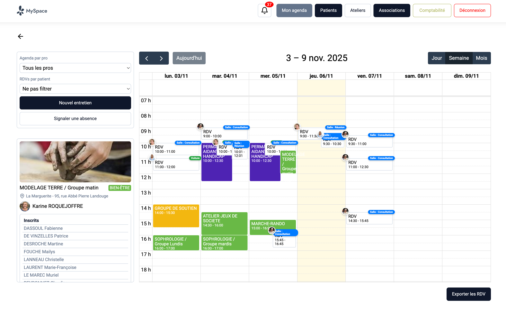

Corentin Pouget
Développeur Full Stack, spécialisé Backend
Diplômé d'un BUT Métiers du Multimédia et de l'Internet.
Basé sur Brive-la-Gaillarde, en Corrèze.
20 ans. Ouvert au travail.
Découvrez mon profil.
Diplômé d'un BUT Métiers du Multimédia et de l'Internet.
Basé sur Brive-la-Gaillarde, en Corrèze.
20 ans. Ouvert au travail.
Découvrez mon profil.
J'aime découvrir et apprendre de nouvelles choses, qu'elles soient liées ou non au développement web. Pour en citer quelques-unes : le tennis, le violon, les échecs. Récemment je me suis pris de passion pour le storytelling, alors je travaille sur la façon de raconter les histoires qui me plaisent.
Mes années d'études m'ont fait découvrir et apprendre un solide éventail de langages et de frameworks : HTML/CSS/JS/PHP, SQL, Symfony, Docker, React, TailwindCSS, NextJS. À cela s'ajoutent des expériences plus variées comme le montage vidéo, l'utilisation de logiciels puissants comme Photoshop et After Effects, ainsi que le storytelling.
Ma 3ᵉ année d'études s'est déroulée en alternance au sein d'une association. Ma mission était de développer une plateforme interne de gestion, que je détaille un peu plus bas. Durant la totalité du projet, j'ai travaillé seul, en comptant sur l'aide d'une développeuse sénior en cas de problèmes majeurs. Cette expérience fut très enrichissante. Je me devais d'être autonome tout en restant à l'écoute des besoins de mes collègues.

Versionnage

Logiciel de design

Organisation

Framework PHP

Conteneurisation

Framework React

Framework CSS

Outil Backend
Hébergeur
28 Oct 2025 - Aujourd'hui (en cours)
Plateform est un réseau social codé avec NextJS et utilisant Supabase. C'est un projet non commercial, développé dans le but d'améliorer mes compétences (NextJS, logique React, composants async) et d'apprendre de nouvelles choses (discussions en temps réel, algorythme de recommandation etc.).
22 Sep 2024 - 26 Août 2025
La Marguerite est une association de patients atteints de maladies chroniques, proposant des accompagnements.
MySpace est une plateforme interne que j'ai créé durant mon alternance, développée avec Symfony et tournant sur docker. C'est une application à plusieures vues, permettant de gérer des ateliers, des listes/fiches de patients, des entretiens/rdv etc. Implémentaton d'un agenda (FullCalendarJS) partagé et d'un systeme de notifications interne.
07 Oct 2024 - 15 Dec 2024
L'agendary est une application de gestion d'événements conçue sur Docker avec un front en NextJS/Shadcn, et un back en Symfony (utilisé comme api). C'était un projet que j'ai réalisé en 3e année de mon BUT en équipe de 5. Elle comprend une page d'accueil, de profil, un agenda privé, ainsi qu'une interface d'administration.